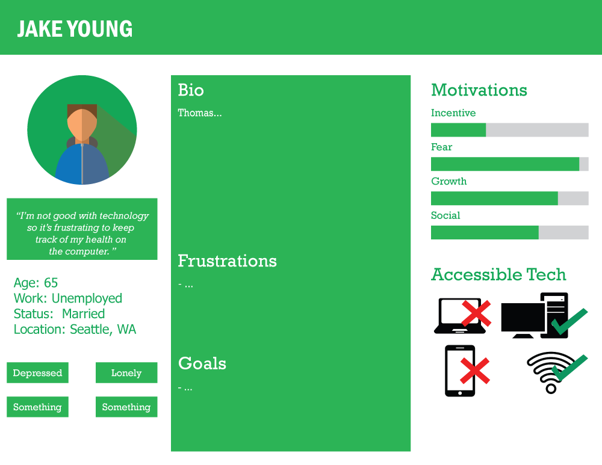
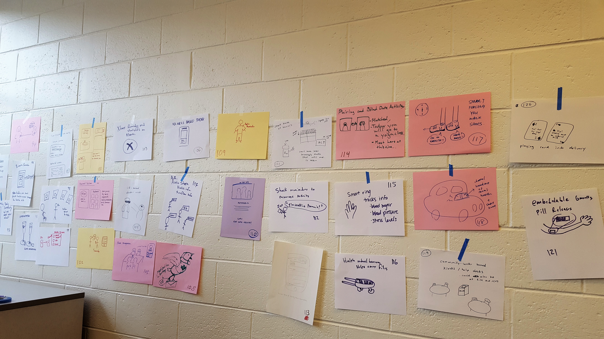
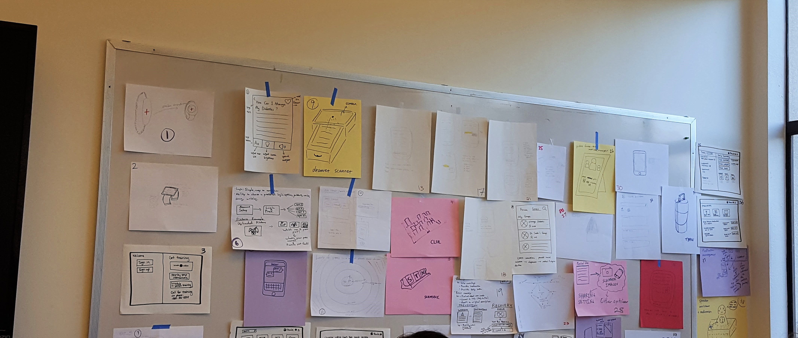
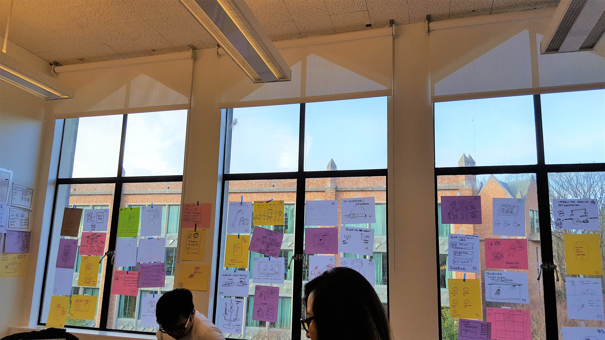
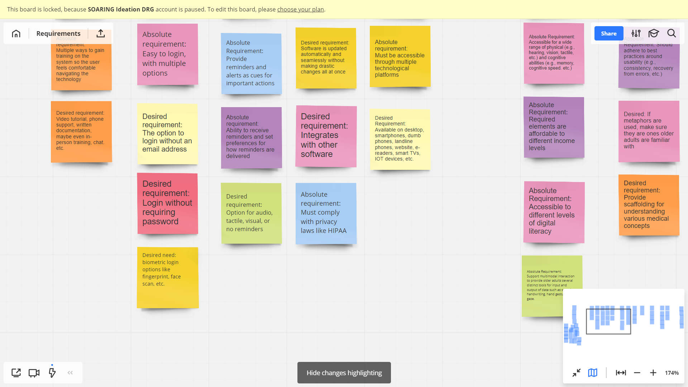
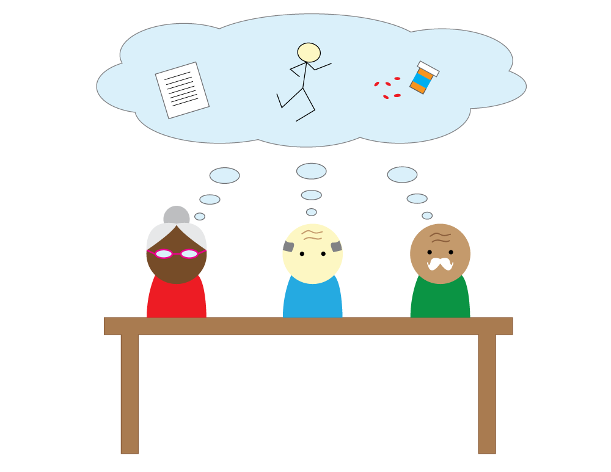
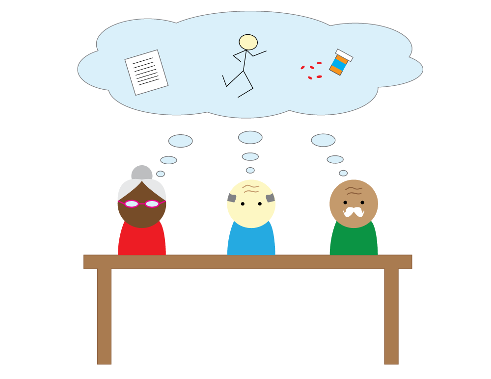

Health Research
SUMMARY
In the winter of 2018 I was part of a research project that focused on helping older adults with their medical information. Keeping track of one's health is an important skill, especially for older adults. However, older individuals face many challenges when trying to keep track of their own health. For example, there are family issues, inability to use modern technology, and physical or mental impairments. Our end goal was to create a design book of design ideas that help solve these problems and allow older adults to comfortably and efficiently keep track of their health. We then handed off the design book to a different team for further research.
RESEARCH AND IDEATION
Created user personas based off of data gathered from interviews.
From the personas we identified numerous problems or challenges that different elderly people faced with their medical information. This included privacy issues, problems with family, bad memory, and physical/mental impairments. After identifying these problems we moved to the ideation phase of the design process. We started off by sketching our ideas with divergent and convergent thinking.
  PROTOTYPING AND USER TESTING
After consolidating our ideas and picking the strongest ideas we moved onto prototyping. First we created design requirements for the final prototypes. These are some examples of the requirements in an online affinity diagram.
Through our efforts we created some low-fidelity prototypes that we wanted to gather user feedback on. Some of the members of the team were able to conduct a design session with older adults. Videos were shown of low-fidelity prototype designs encapsulating some of the requirements above. Questions were focused on what features they wanted in a health tracking system.
 

REFLECTION
This research group was a great opportunity for me to practice my skills working in a large team with everyone focused on a singular goal. A lot of people had more experience then me whether that was in research, design, or development. However, that was the best part for me because I was able to learn a lot more about the design process from very talented individuals. It was a great experience overall and an effective way to learn how to work in a professional team-based setting.